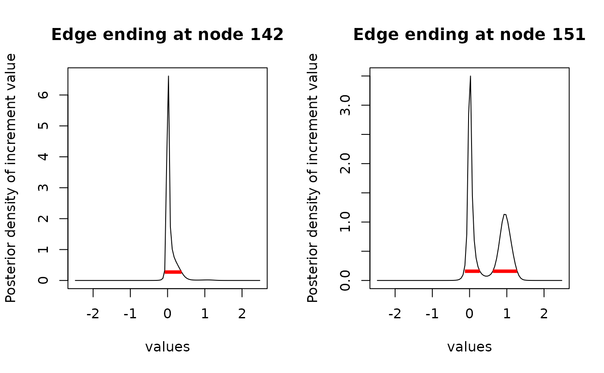
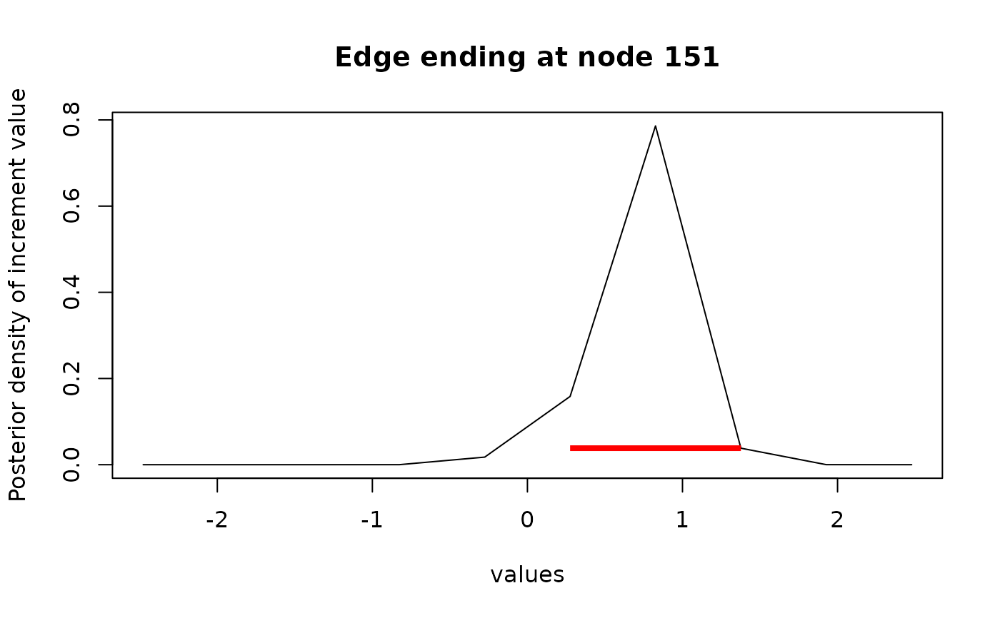

This function takes an object of class ancestralCauchy, result of function
ancestral or increment, and find the Highest (Posterior) Density Interval
of reconstructed states for given nodes.
It relies on function hdi from package HDInterval.
# S3 method for class 'ancestralCauchy'
hdi(object, credMass = 0.95, allowSplit = TRUE, node, ...)an object of class ancestralCauchy, result of function
ancestral or increment.
a scalar between 0 and 1 specifying the mass within the credible interval.
if FALSE and the proper HDI is discontinuous,
a single credible interval is returned, but this is not HDI.
See hdi for details. Default to TRUE.
the vector of nodes where to plot the ancestral reconstruction.
Can be missing, in which case all the nodes reconstructed in the ancestralCauchy
further arguments to be passed to plot.
A named list. Each item of the list is named after a node,
and contains the HDI interval of the node, in the same format
as in hdi:
a vector of length 2 or a 2-row matrix with the lower and upper limits of the HDI,
with an attribute credMass.
If allowSplit=TRUE, the matrix has a row for each component of a discontinuous HDI
and columns for begin and end.
It has an additional attribute "height" giving the probability density at the limits of the HDI.
The function relies on the density method of the hdi function.
Package HDInterval must be loaded in the workspace for this
function to work.
See documentation of this functions for more details on the definition and
computation of the HDI.
The density is obtained on the grid of values defined by the
ancestralCauchy object, which defaults to 100 values.
See details in the documentation of the
ancestral and increment functions.
NOTE: if the grid of values is too coarse (if it has too few values), then the result can be a poor approximation. Please make sure to use an appropriate grid in the reconstruction to get meaningful results (see example).
# Lizard dataset
data(lizards)
attach(lizards)
# Fit CP
fit_CP <- fitCauchy(phy, svl, model = "cauchy", method = "reml")
# Reconstruct increments for some branches
inc <- increment(fit_CP, node = c(142, 151), n_cores = 1)
# HDI
library(HDInterval)
inc_int <- hdi(inc)
plot(inc, intervals = inc_int, type = "l")

# HDI of edge ending at node 142 is unimodal
inc_int[["142"]]
#> begin end
#> [1,] -0.07509 0.37545
#> attr(,"credMass")
#> [1] 0.95
#> attr(,"height")
#> [1] 0.2720383
# HDI of edge ending at node 151 is bimodal
inc_int[["151"]]
#> begin end
#> [1,] -0.12515 0.27533
#> [2,] 0.62575 1.27653
#> attr(,"credMass")
#> [1] 0.95
#> attr(,"height")
#> [1] 0.1584222
# If the grid is coarse, the result is meaningless
inc <- increment(fit_CP, node = c(151), n_cores = 1, n_values = 10)
inc_int <- hdi(inc)
plot(inc, intervals = inc_int, type = "l")
